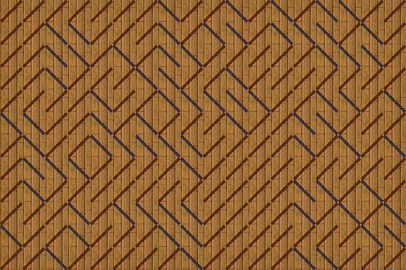

Block and Space
The simplest way to create a tiled maze is to use a single block tile. We can ignore edge matching altogether. However, with a random scattering, large areas of open space or solid blocks form. Also we get blocks touching at their corners which doesn't look good.
Tileset
Only two are tiles needed, a block and a space. |
'Tidy Tiling' Method
In the above image, all tiles are selected at random. However, there is some clumping and corner touching of box and space tiles. By being a bit more selective, we can reject tilings that form clumping or corner touching.
In the 'tidy tiling' method, four conditions are detected:
In each case, the current block is not chosen at random but set as to prevent corner touching or a clump of four similar tiles. The result is more maze like. The other four conditions are left as random tile selection.
You can select 'tidy tiling' by ticking the Stage checkbox by 'Block2' menu.
Diagonal Gates
These allow use of all the floor, whereas with block mazes you can't walk over half the floor area.
Diagonal gate tiles can create quite a good random maze. Any added wandering sprites need to also move diagonally. Small enclosed rooms easily form, but none with the less random method (Stage checkbox ticked).
Tileset
And a variation with an added seamless background. |
See Stage to create your own layouts.
Stage: Diagonal Gate Tiles Maze
Thin Wall Tiles
These also allow use of all the floor area. There is no tile edge matching. So some walls can be double thickness where North and South or East and West meet. This adds to the random appearance. But, some unreachable enclosed rooms are also formed.
Tileset
A four set of thin wall tiles. No shadow effect can be added because tiles 2 and 3 will extend beyond the tile edge. |
Stage: Thin Wall Tiles Maze

North West Wall Tiles
These also allow use of all the floor area.
Walls are only to the top (North) and left (West) of each tile. This produces consistent wall thickness and also allows a shadow effect to be added within the tile. There is no tile edge matching. The tileset is again four tiles but a different arrangement to 'Thin Walls' above.
Tileset
A variation with a seamless background and added shadow for a more 3d effect. |
Stage: North West Wall Tiles Maze

3d Wall Tiles
By expanding beyond the tile edges, we can draw the walls in a fixed 3d perspective.
Tileset
|
At first glance, these might look like 2-edge Wang tiles. But they're not. The wall between the pillars, is fully contained within the tile. However, as the pillars straddle the tile edges, these are more single side tiles than block tiles. |
See Stage to create your own layouts.
Stage: 3d Wall Tiles Maze